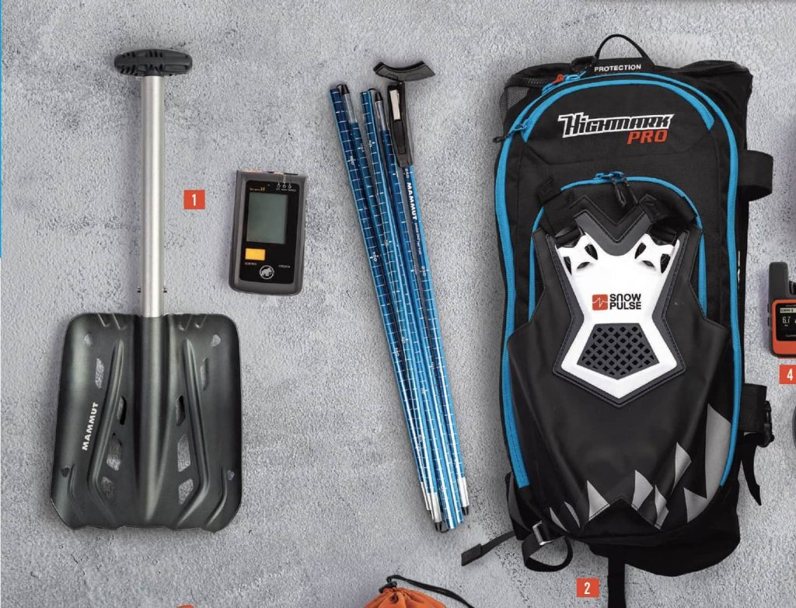
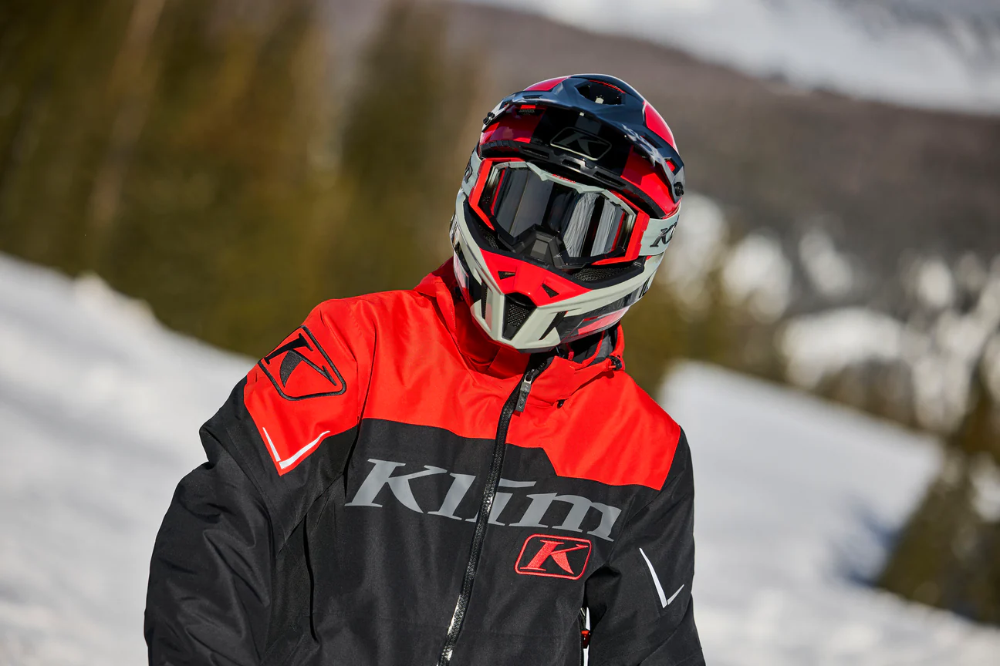
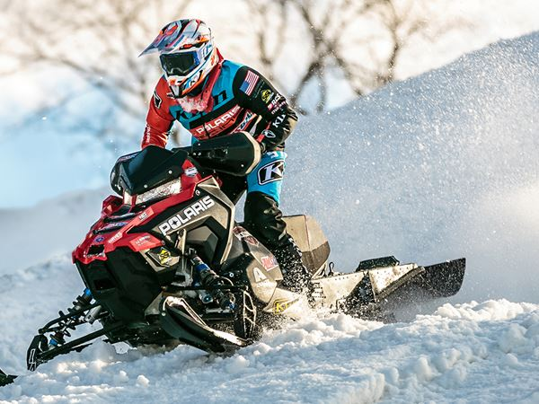
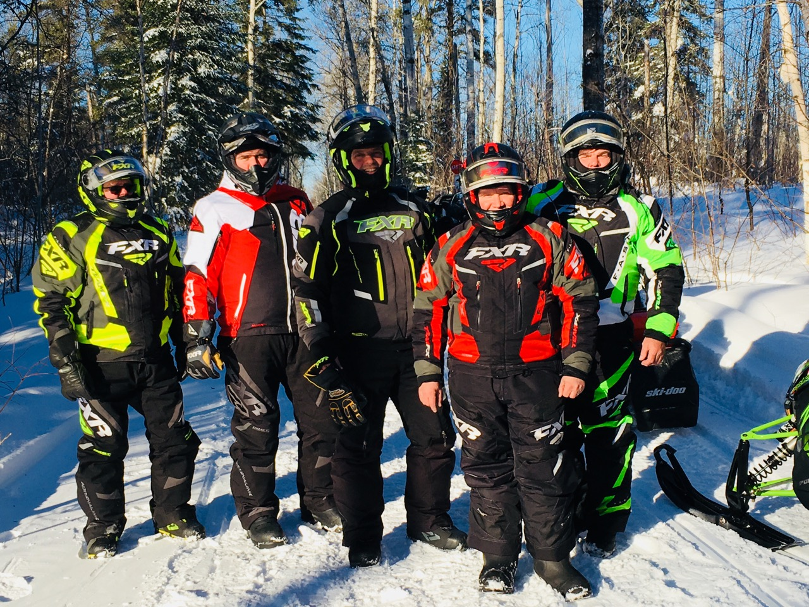
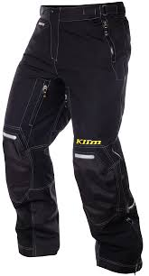

We Love Snowmobiling
Snowmobiling adds joy to winter with thrilling challenges, stunning scenery, and so much more. This site is here to help you get started on your snowmobiling journey. Getting into the sport can be tough for beginners, which is why this guide will be a valuable resource. We'll cover safety tips, recommend the right gear, and share the best tips and tricks to ensure you have fun and avoid getting stuck along the way.
Get Started
Embarking on your snowmobiling journey is exciting! To get started, familiarize yourself with the basics of snowmobiling, including how to operate the machine, understand its controls, and practice riding techniques. Consider joining a local club or taking a beginner's course to enhance your skills and connect with fellow enthusiasts. With the right guidance and practice, you'll be ready to explore the winter wonderland in no time!
Safety
Safety is paramount when snowmobiling. Always wear appropriate protective gear, including a helmet, goggles, gloves, and insulated clothing. Before heading out, check weather conditions and your snowmobile's functionality. Stay on marked trails and be aware of your surroundings to avoid accidents. Remember to ride with a buddy and let someone know your plans. Following these safety guidelines will help ensure a fun and secure snowmobiling experience.
Gear
Having the right gear is essential for a successful snowmobiling adventure. Start with a quality snowmobile helmet that meets safety standards. Layer your clothing to stay warm, including moisture-wicking base layers, insulating mid-layers, and waterproof outer layers. Additionally, invest in gloves, boots, and goggles designed for cold weather. Don't forget essential accessories like a first-aid kit and a GPS for navigation. The right gear will enhance your comfort and safety on the trails.
How to Get Started
Here you will find fundamental information about how you can get started snowmobiling.
To begin your snowmobiling journey, it's essential to familiarize yourself with the basics of operating a snowmobile, including understanding the controls, safety features, and maintenance requirements. Consider taking a safety course to learn proper riding techniques and safety protocols. Additionally, it's beneficial to connect with local snowmobiling communities to gain insights, share experiences, and find recommended trails. Always remember to check the weather conditions, dress appropriately for the cold, and respect the environment while enjoying the thrill of snowmobiling.
Common Mistakes
In this video, we highlight some of the most common mistakes that new snowmobilers make. Understanding these pitfalls can help you stay safe and enjoy your snowmobiling experience to the fullest. Learn how to avoid accidents, ensure proper handling, and make the most out of your rides.
Gear
Learn about essential equipment for snowmobiling.
Having the right gear is crucial for a safe and enjoyable snowmobiling experience. From protective clothing, like helmets and insulated suits, to essential accessories such as gloves, goggles, and boots, each piece of equipment plays a vital role. Ensure that your snowmobile is also equipped with necessary features, such as a reliable GPS and a first-aid kit, to enhance your safety and convenience on the trails.
Helmet

One of the best helmets on the market.
Price: $499.99
Avalanche Backpack

Very important safety device.
Price: $1299.99
Snow Pants
Super nice and warm.
Price: $303.99